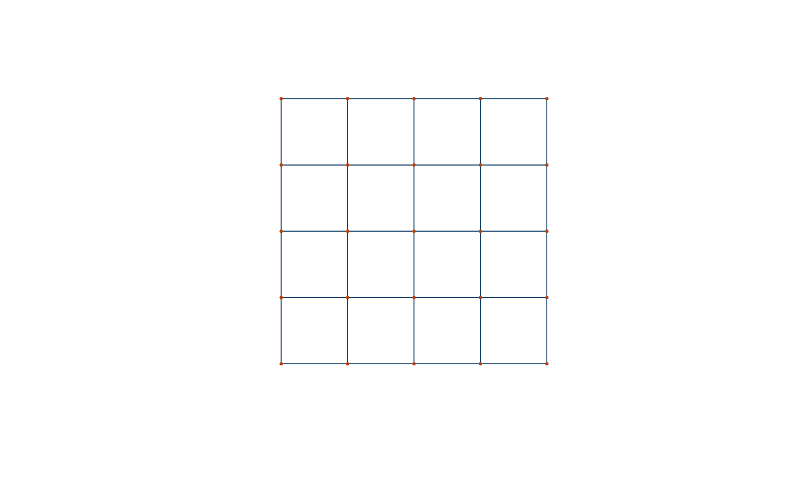

What is osmnxr?
osmnxr is OSMnx for R: it downloads, models,
analyzes and visualizes street networks from OpenStreetMap. The public API
is tidyverse-friendly and returns sf objects; the
heavy graph computation (routing, metrics, simplification) runs in a
bundled Rust core.
The central object is the osm_graph: a pair of
sf tables (nodes and edges) plus metadata.
Working offline
Every part of the analysis API works without network access on a synthetic grid, which is handy for learning and for reproducible examples:
g <- example_osm_graph(n = 5)
g
#>
#> ── osm_graph ───────────────────────────────────────────────────────────────────
#> 25 nodes, 80 edges
#> Network type: "drive"
#> Simplified: TRUE
#> CRS: "EPSG:3857"
plot(g, nodes = TRUE)
Network statistics
ox_basic_stats(g)
#> # A tibble: 1 × 7
#> n_nodes n_edges total_length mean_length mean_out_degree self_loops circuity
#> <int> <int> <dbl> <dbl> <dbl> <int> <dbl>
#> 1 25 80 8000 100 3.2 0 1Routing
Find the nearest nodes to two coordinates, then compute the shortest path (Dijkstra, in Rust):
from <- ox_nearest_nodes(g, x = 0, y = 0)
to <- ox_nearest_nodes(g, x = 400, y = 400)
ox_shortest_path(g, from, to)
#> [1] 1 6 11 16 17 18 19 20 25Single-source distances to every node:
head(ox_distances(g, from))
#> # A tibble: 6 × 2
#> osmid distance
#> <int> <dbl>
#> 1 1 0
#> 2 2 100
#> 3 3 200
#> 4 4 300
#> 5 5 400
#> 6 6 100Street orientation
The Shannon entropy of edge bearings summarises how ordered a street grid is — low for a gridiron, high for an organic network:
ox_orientation_entropy(g)
#> [1] 1.511395Downloading real data
With network access, build a graph straight from a place name (this contacts the OpenStreetMap Overpass API, so it is not run here):
g <- ox_graph_from_place("Olinda, Brazil", network_type = "drive")
plot(g)
ox_basic_stats(g)See ?ox_graph_from_bbox,
?ox_graph_from_point and ?ox_geocode for the
other download entry points, and ox_settings() to configure
endpoints, timeouts and caching.